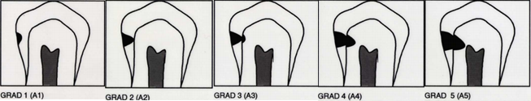

Karies (hull i tannen), er en sykdom som oppstår når tannsubstans brytes ned av biprodukter (syrer) fra bakteriekolonier som lever på tannoverflaten. Disse koloniene er det man kaller plakk.
Hvorfor man får hull i tennene, har en fleraktoriell årsak. Til å forklare hvorfor, bruker en ofte Keys triade. Den består av enkeltfaktorene :plakk på tennene, kosten og tannflaten. Hver for seg er ikke disse nok til å danne et hull i tannen, men fletter man dem sammen, og legger på tid, vil det etterhvert oppstå et hull.
Man graderer hullene inn i fem grader der grad 1 er starten på hullet og 5 er hull helt inn til nerven av tannen. Grad 1-2 er det mange kaller for «begynnende hull» og er et hull i emaljen av tannen. Emaljen er 1-2mm tykk. Er hullet lokalisert her kan man stoppe hullet ved å være flink med munnhygiene som tannpuss og tanntråd. Ved grad 3-5 har hullet gått inn til dentin eller tannbenet under emaljen og man må borre bort hullet (den ødelagte delen av tannen) for å stoppe det.
Etter man har borret er det et hulrom i tannen. Ut ifra hvor mye tann som er igjen etter dette kan man erstatte tapt del av tann med enten en fylling, en krone eller innlegg. Oftest bruker man ulike fyllingsmaterialer til å fylle igjen tannen slik at den blir hel igjen.
Før brukte man amalgam til dette, men det er nå erstattet med ulike hvite plastmaterialer. Plastmaterialene kommer i mange ulike hvite fargenyanser som gjør det mulig å lage pene fyllinger som ikke syntes. Det finnes mange ulike fyllingsmaterialer på markedet. Vi på Ibsen tannlegesenter benytter kun anerkjente og godt dokumenterte materialer.